Введение
Эта издание является учебным пособием для начинающих. Благодаря ему вы познакомитесь с языком программирования Python, а именно его третьей версией. Мы пройдём путь от простейших линейных алгоритмов до сложнейших конструкций с бесконечными циклами и фрактальным вызовом функций. Вы можете обучаться с помощью этого издания дома или на дополнительных занятиях в школе, при наличии компьютера. Для программирования вам понадобиться прежде всего установить сам Python с официального сайта, код можно писать в любом редакторе текста, но удобнее всего это делать в специализированном редакторе, таком, как например PyCharm. Чтобы скачать PyCharm, перейдите по ссылке и скачайте любую версию:
ссылка
Все примеры нужно запускать самому для полного понимания. Их можно скачать и запустить:
ссылка
Условные обозначения:
S – всегда переменная типа string
для быстрого начала
Глава I. Основы работы яп Python. Переменные, их типы, и операции над ними.
Параграф 1. Основы.
Все яп переводятся в бинарный код для обработки процессором, этим занимается компилятор. Но “компилятор” в Python называется интерпретатор, он переводит python код в байт код. Это позволяет сильно упростить язык. Но не думайте, что у Python нет минусов, он работает заметно медленнее других яп.
В Python существуют различные библиотеки, расширяющие возможности программирования. Чтобы ими пользоваться нужно прописать команду import.
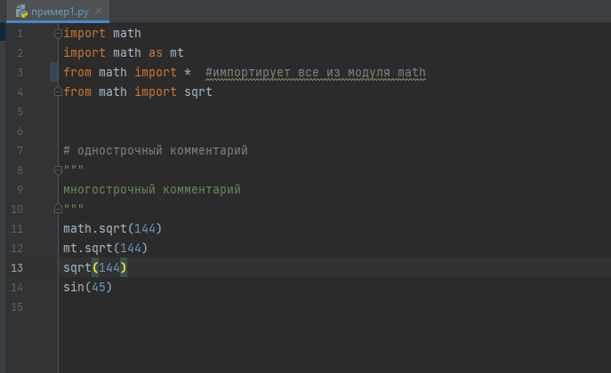
Чтобы вывести информацию в консоль, в Python используется команда print(). Если вы хотите вывести число, просто напишите его в скобках, если же вы хотите вывести строку, то она должна быть заключена в любые кавычки, чтобы вывести переменную, нужно просто ввести её название, если нужно вывести несколько значений подряд, они записываются через запятую.
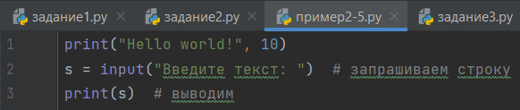
Текст можно выводить форматировано, используя обратный слеш и некоторые буквы английского алфавита
\\ - так можно вывести \
\’ или \” – выводит кавычки
\n – выводит следующий далее текст с новой строки
\t – добавит табуляцию
Python значения, написанные через “,”, выводит через пробел, пробел можно заменить чем угодно, с помощью sep.
Также у функции print есть параметр end, по умолчанию он равен “\n”.
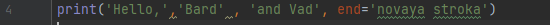
Параграф 2. Переменные.
Переменные – это основа любого языка программирования. У переменных всегда есть названия. В Python название переменной не может начинаться с числа, также вы ,конечно, можете назвать переменную кириллицей, а кто-то даже сможет мефодицей, но так не принято делать. Переменные хранят в себе значения, и ,как ни странно, их можно менять. Также во многих языках программирования присутствуют константы. Константы – это как переменные, но их нельзя менять. В Python нет констант, но вместо этого вы можете написать название переменной большими буквами, как в настоящем языке программирования. Оператором присвоения является знак “=”.
Переменные бывают нескольких видов:
- Целочисленные – int (от англ. integer)
- Числа с плавающей точкой – float
- Строковые – str (от англ. string)
- Смысловые – bool
- Список – list
- Словарь – dict
Параграф 3. Операции над целочисленными переменными и переменными с плавающей точкой.
Помимо основных вычеслительных операций присутствуют такие как целочисленное деление “//” и остаток от деления “%”.
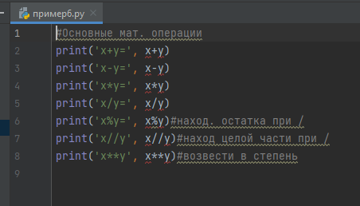
Параграф 4. Операции над строками.
Строки можно складывать и умножать. Если вывести сложение строк, они будут написаны слитно.
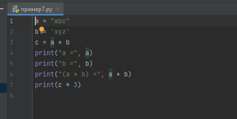
К строкам можно обращаться по индексу, индекс первого символа строки – 0, индекс последнего символа строки – -1. Также с помощью индексов можно извлекать срезы.
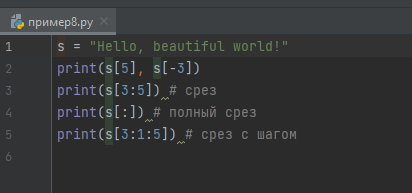
Если нужно узнать количество символов в строке, используется функция len().
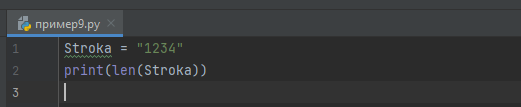
У каждого символа есть свой код в кодировке ASCII (American standard code for information interchange). Его можно узнать с помощью команды ord. Также из числа можно получить букву с помощью команды chr.
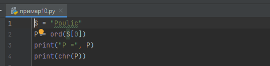
Методы строк
# Поиск подстроки в строке. Возвращает номер первого вхождения или -1
S.find(str, [start],[end])
# Поиск подстроки в строке. Возвращает номер последнего вхождения или -1
S.rfind(str, [start],[end])
# Поиск подстроки в строке. Возвращает номер первого вхождения или вызывает ValueError
S.index(str, [start],[end])
# Поиск подстроки в строке. Возвращает номер последнего вхождения или вызывает ValueError
S.rindex(str, [start],[end])
# Замена шаблона
S.replace(шаблон, замена)
# Разбиение строки по разделителю
S.split(символ)
# Состоит ли строка из цифр
S.isdigit()
# Состоит ли строка из букв
S.isalpha()
# Состоит ли строка из цифр или букв
S.isalnum()
# Состоит ли строка из символов в нижнем регистре
S.islower()
# Состоит ли строка из символов в верхнем регистре
S.isupper()
# Состоит ли строка из неотображаемых символов (пробел, символ перевода страницы ('\f'), "новая строка" ('\n'), "перевод каретки" ('\r'), "горизонтальная табуляция" ('\t') и "вертикальная табуляция" ('\v'))
S.isspace()
# Начинаются ли слова в строке с заглавной буквы
S.istitle()
# Преобразование строки к верхнему регистру
S.upper()
# Преобразование строки к нижнему регистру
S.lower()
# Начинается ли строка S с шаблона str
S.startswith(str)
# Заканчивается ли строка S шаблоном str
S.endswith(str)
# Сборка строки из списка с разделителем S
S.join(список)
# Символ в его код ASCII
ord(символ)
# Код ASCII в символ
chr(число)
# Переводит первый символ строки в верхний регистр, а все остальные в нижний
S.capitalize()
# Возвращает отцентрованную строку, по краям которой стоит символ fill (пробел по умолчанию)
S.center(width, [fill])
# Возвращает количество непересекающихся вхождений подстроки в диапазоне [начало, конец] (0 и длина строки по умолчанию)
S.count(str, [start],[end])
# Возвращает копию строки, в которой все символы табуляции заменяются одним или несколькими пробелами, в зависимости от текущего столбца. Если TabSize не указан, размер табуляции полагается равным 8 пробелам
S.expandtabs([tabsize])
# Удаление пробельных символов в начале строки
S.lstrip([chars])
# Удаление пробельных символов в конце строки
S.rstrip([chars])
# Удаление пробельных символов в начале и в конце строки
S.strip([chars])
# Возвращает кортеж, содержащий часть перед первым шаблоном, сам шаблон, и часть после шаблона. Если шаблон не найден, возвращается кортеж, содержащий саму строку, а затем две пустых строки
S.partition(шаблон)
# Возвращает кортеж, содержащий часть перед последним шаблоном, сам шаблон, и часть после шаблона. Если шаблон не найден, возвращается кортеж, содержащий две пустых строки, а затем саму строку
S.rpartition(sep)
# Переводит символы нижнего регистра в верхний, а верхнего – в нижний
S.swapcase()
# Первую букву каждого слова переводит в верхний регистр, а все остальные в нижний
S.title()
# Делает длину строки не меньшей width, по необходимости заполняя первые символы нулями
S.zfill(width)
# Делает длину строки не меньшей width, по необходимости заполняя последние символы символом fillchar
S.ljust(width, fillchar=" ")
# Делает длину строки не меньшей width, по необходимости заполняя первые символы символом fillchar
S.rjust(width, fillchar=" ")
Для полного усвоения рекомендуется по пробовать на деле все эти методы и вам наверно кажется что большая их часть не пригодится, но это не так.
Параграф 5. Списки и операции над ними.
Список – последовательность данных разных типов. У списка тоже есть нумерация, такая же как у строки. Команда len также справедлива для списков. Можно делать срезы списков. Метод index принимает значение и возвращает индекс этого значения. Метод count принимает значение, а возвращает количество его повторений. Метод sort сортирует список. Метод append принимает значение добавляет его в конец списка. Метод remove удаляет полученное значение из списка. Метод pop удаляет значение по индексу. Метод extend склеивает два списка, тоже самое что и сложение двух списков. Метод insert принимает индекс и вставляет значение. Также существуют функции: min, max, sum. Можно проверять, есть ли значение в списке с помощью in или not in.
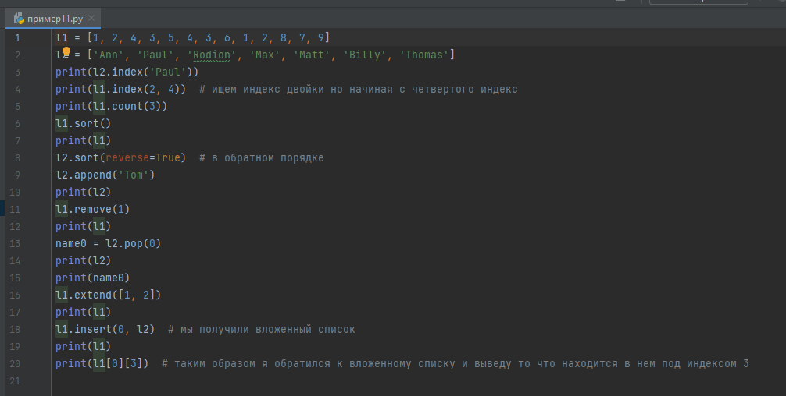
Параграф 6. Словари.
Словари – это не упорядоченные списки. Словарь содержит пары ключ : значение. К элементам словаря нужно обращаться по ключу. Словари могут пригодиться при де кодировке или кодировке. В целом словари самый мало используемый тип, но упомянуть их стоит. Запись словарей выглядит так.
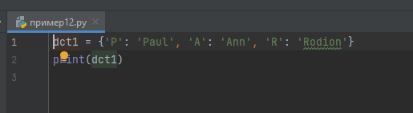
словарь можно создать и так.
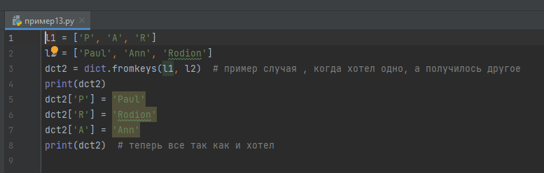
Параграф 7. Переменные логического типа.
Переменные логического типа хранят в себе одно из двух значений True или False.
На этом все про логические переменные.
Итоги главы
В этой главе мы познакомились со всеми переменными и с тем, что с ними можно делать,
с основами работы яп python.
Задания по этой главе есть в конце пособия, настоятельно рекомендуем их просмотреть.
Глава II. Алгоритмические конструкции. Логические операции.
Параграф 1. Виды алгоритмических конструкций.
Существует 3 типа алгоритмических конструкций: следование, ветвление, цикл.
Алгоритмическая конструкция «следование» представляет собой прямое выполнение последовательно записанных команд. Во всех выше приведённых примерах использовалась конструкция «следование».
Ветвление – это конструкция, имеющая условие, которое может быть только верным или неверным, и от этого зависит последовательность команд.
Цикл – это конструкция, имеющая условие, пока это условие является верным, все команды в теле цикла повторяются.
Алгоритмические конструкции тоже одна из важнейших частей яп, наря ду с переменными.
Параграф 2. Ветвление.
Перед тем как приступить к конструкции «ветвление», стоит оговорить, что если вам нужно занести в переменную её же изменённое значение, то можно использовать такой синтаксис:
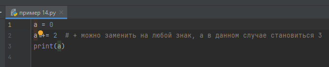
Условием конструкции может быть сравнение, для этого используют знаки <, >, ==, != - не равно.
Также условием может быть любая команда, возвращающая значение True/False.
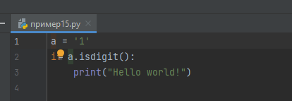
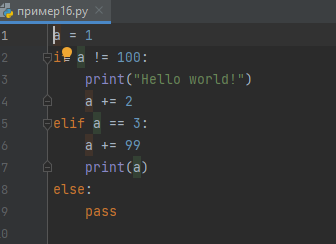
Как понятно из примеров, ветвление начинается со слова if, затем следует условие, а потом с новой строки, с отступом в одну табуляцию (Tab*1/Space*4), команды, которые нужно выполнить, если условие окажется верным. Если нужно продлить конструкцию на ещё одно условие используется elif. Else (англ. “иначе”) обычно закрывает всю конструкцию. Если вам очень хочется закончить конструкцию на else, вы можете использовать pass. В конструкции не обязательно должны присутствовать else и elif. Ветвление работает таким образом, что если он
находит первое верное условие, все остальные команды, входящие в конструкцию, не выполняются. Можно также передать несколько условий через and, or, и отрицание not
Параграф 3. Циклы.
В Python есть два варианта циклов: с условием и циклы, повторяющиеся определённое кол-во раз.
Цикл while имеет условие и выполняется, пока условие верно.
Цикл while определяется так:
While //условие//:
//тело цикла//

Break завершает цикл while.
Цикл for присваивает переменной поочерёдно все значения переданного списка
Команда range создаёт список
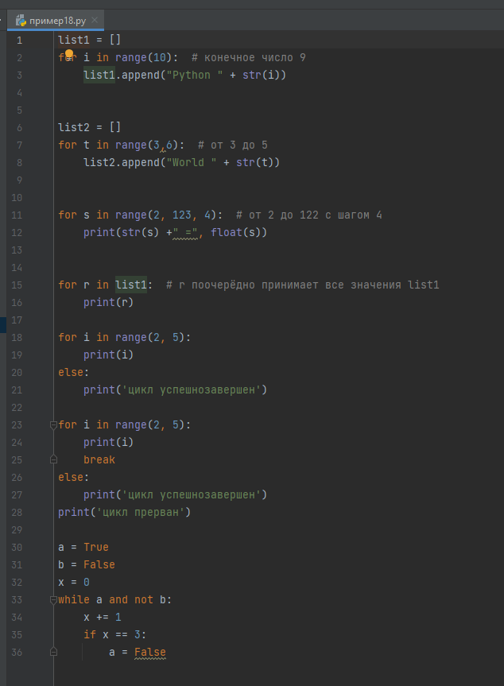
break завершает и цикл for.
После цикла fore может стоять блок else, он выполнится только если цикл успешно закончился
логические выражения можно объединить используя конъюнкцию, дизъюнкцию и отрицание
and – конъюнкция
or – дизъюнкция
not – отрицание
Итоги главы
В этой главе мы узнали, что такое алгоритмические конструкции, их виды, условные операции и как они работают.
Глава III.
Объектно-ориентированное программирование(ООП)
Объе́ктно-ориенти́рованное программи́рование (ООП) — методология программирования, основанная на представлении программы в виде совокупности объектов, каждый из которых является экземпляром определённого класса, а классы образуют иерархию наследования
Проще говоря нужно разбить сложный процесс на множество под процессов для упрощения понимания и ускорения работы кода.
Параграф 1. Функции.
Функции позволяют нам выполнять часть кода множественное количество раз, в функции можно передавать разные значения и получать ответ от нее.
Функция определяется так:
def //название функции//(//параметры//):
//тело функции//
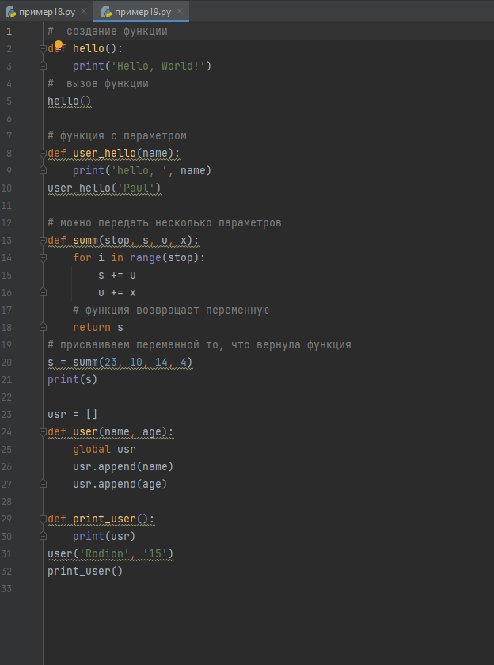
После return выполнение функции прерывается.
Используя global можно назначить общие для всех функций переменные
Функции позволяют оптимизировать код и не писать одно и тоже множество раз.
Параграф 2. Точка входа.
Как вы уже знаете в python можно импортировать другие библиотеки, но также вы можете импортировать в свой файл другой ваш файл, при этом он исполнится. Но если вам это не нужно, придется воспользоваться точкой входа.
Python интерпретатор автоматически создает переменную с названием __name__ и значением __main__, но только если вы запускаете сам файл, а не импортируете его
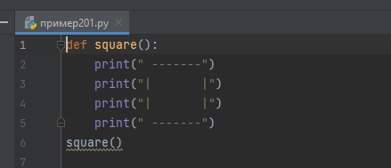
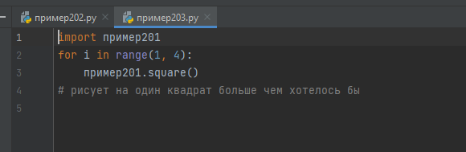
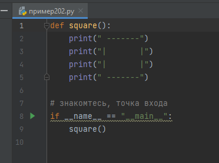
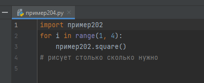
параграф 3. Классы.
Класс нужен для описания чего-то большого и хранения множества функций и переменных, класс может описывать персонажа игры или поле битвы, сложную математическую формулу и вообще все что душе угодно.
Класс задается так:
Class //имя//(параметры):
//тело класса//
Класс похож на функцию, но это только на первый взгляд. Есть не мало отличий.
В классе нельзя просто создать переменную или вызвать функцию, нужно сказать , что она принадлежит ему через self
В классах все записывается в функциях. Функция с названием __init__ будет запускаться при каждом создании экземпляра класса
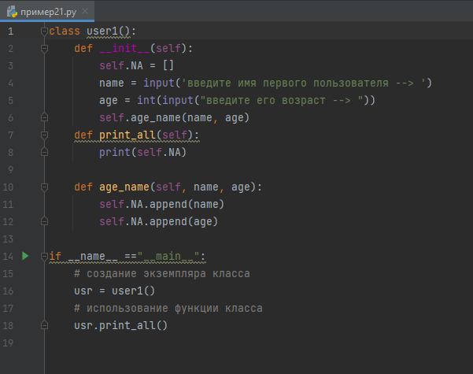
итоги главы.
Мы немного разобрались в ооп. Этих знаний достаточно для проектов средней сложности, а углубляться можно до бесконечности и конечно в одной главе всего не объять.
Немного отходя в сторону от основной темы, существует библиотека Qt и программа Qt Designer,
С помощью которых можно легко например написать калькулятор с графикой.
Через библиотеку pyinstaller можно осуществить компиляцию код в исполняемаый файл.
Обо всем этом можно узнать из дополнительных источников в конце
Я лишь приложу в дополнительных материалах пример и инструкцию по установке библиотек через pip